针对菌棚内食用菌采摘效率低、损伤率高及视觉识别准确率低等问题，研制视觉采摘机械臂一代机与二代机，设计选用三种面向不同采摘需求的末端夹爪。
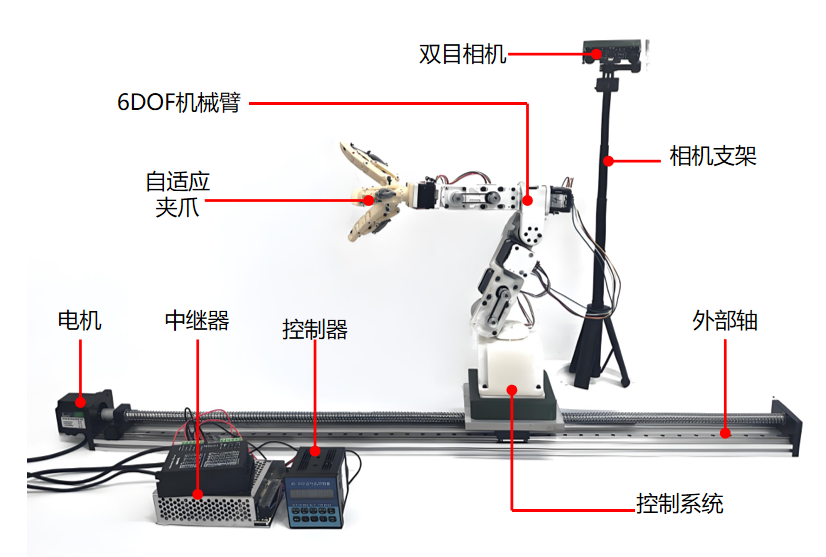
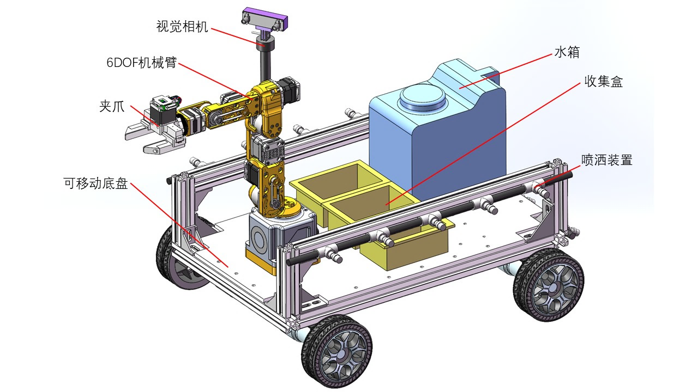
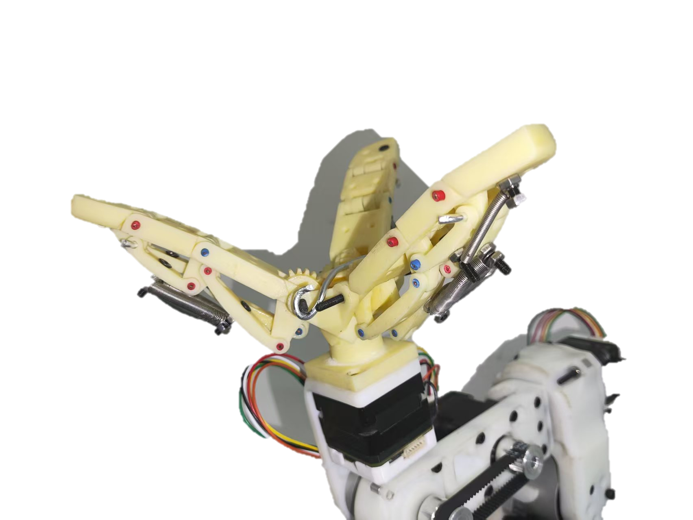
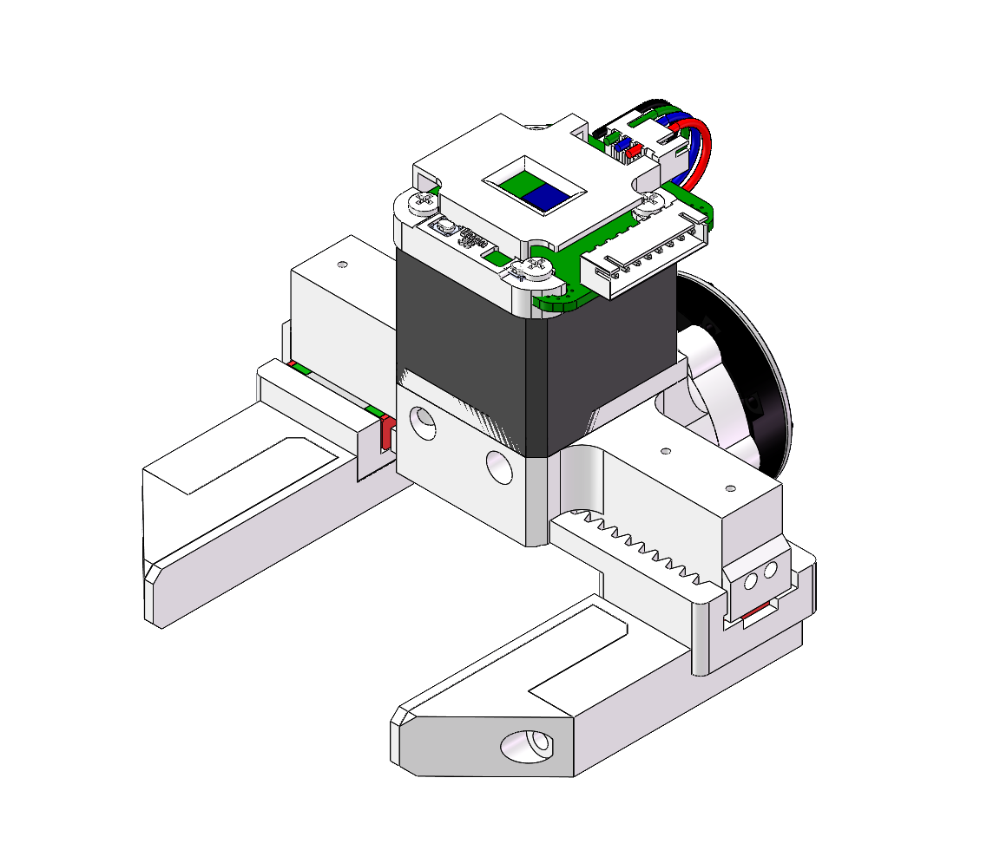
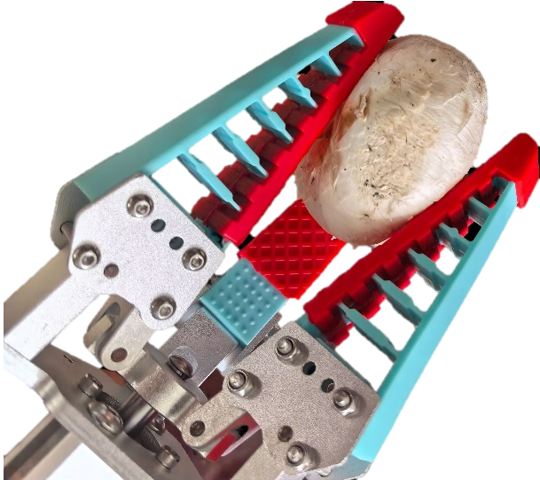
使用ANSYS对关键零部件开展静力学、瞬态动力学、疲劳分析及基于响应面的优化分析。
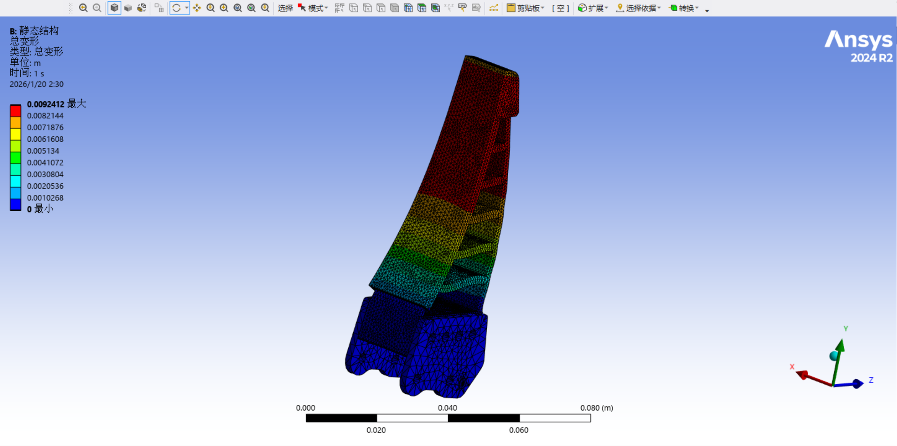
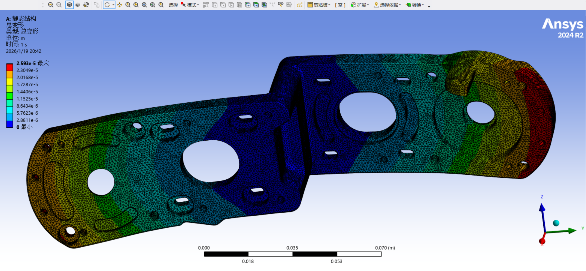
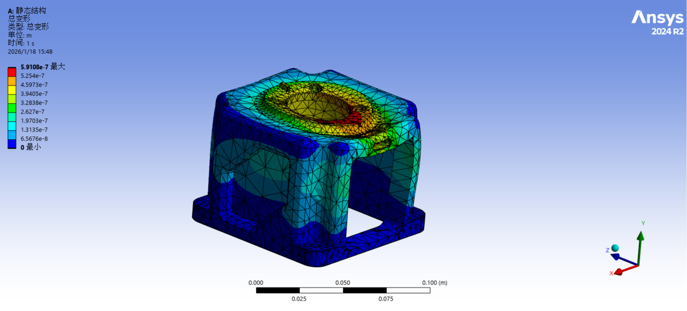
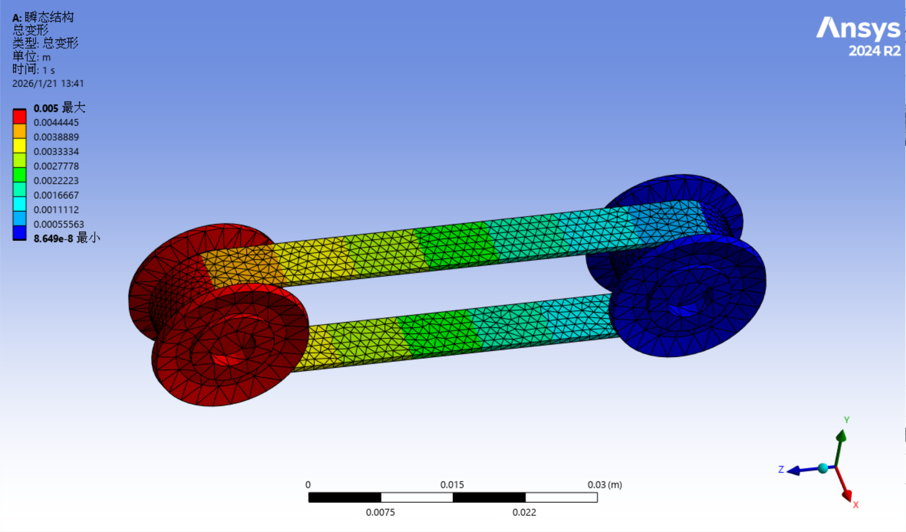
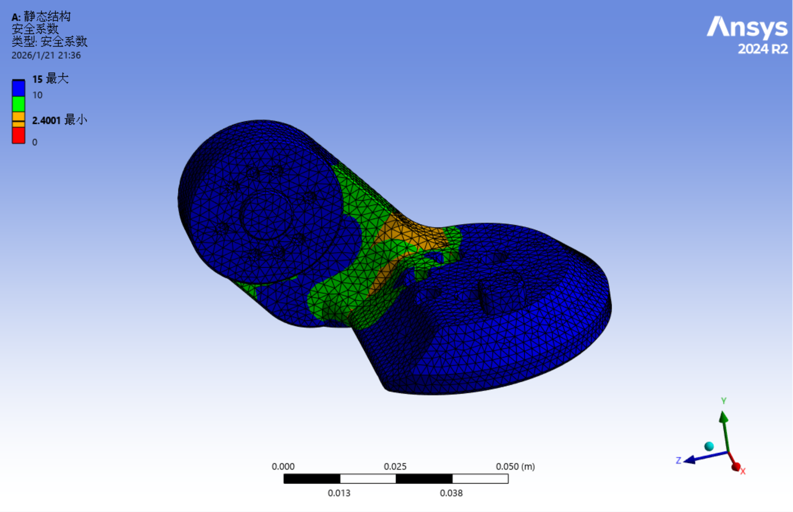
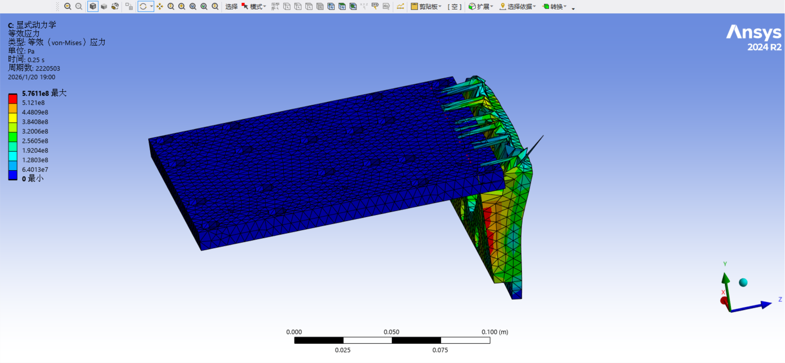
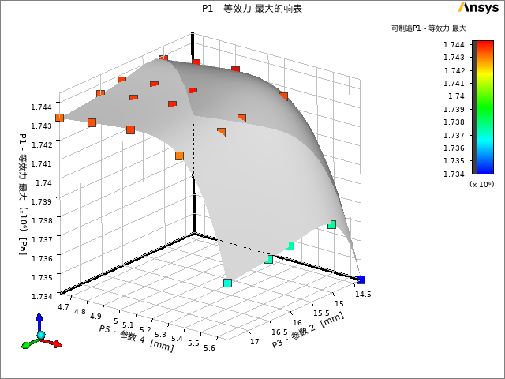
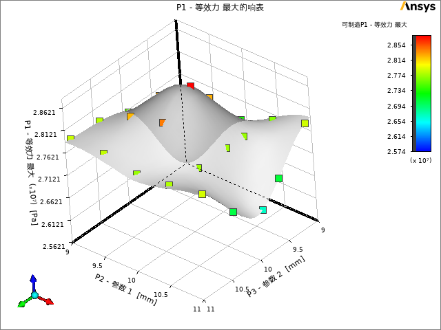
融合 Kaggle 公开数据集与自建多环境数据集训练 YOLOv8 视觉识别模型。
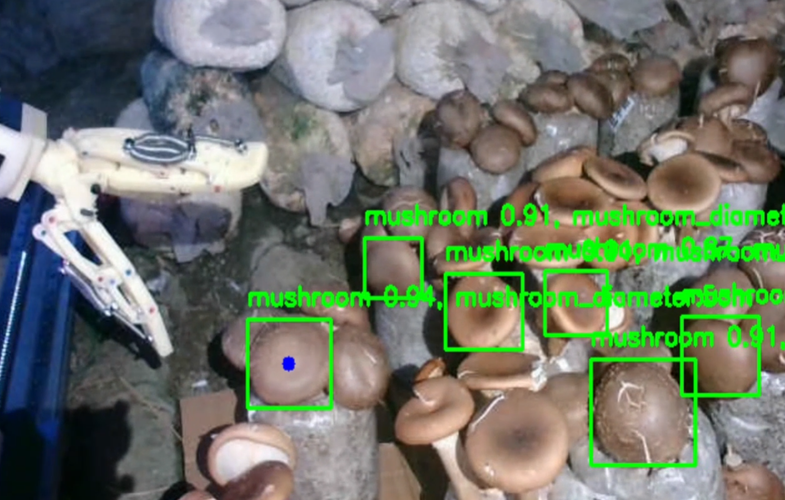
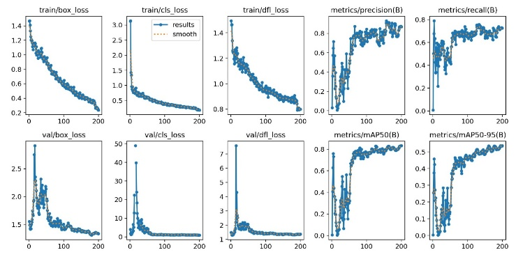
通过有限元仿真与参数优化，为机械臂结构设计与轻量化提供依据；完成一代机装配与调试；申请国家专利1项，授权软著1项，所在项目获中国国际大学生创新大赛国家级三等奖。
针对二代机冗余机械臂系统逆运动学的欠定多解问题，提出 MLP+PSO 融合求解方法。
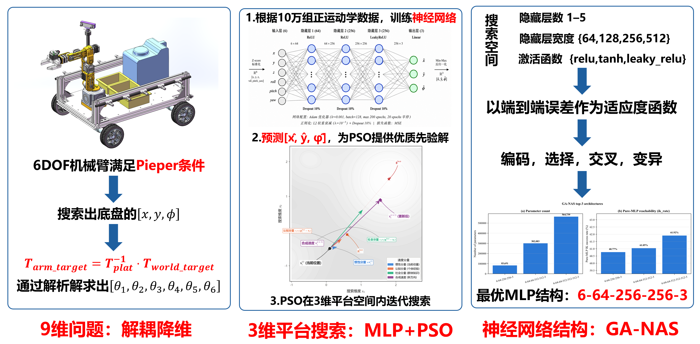
搭建基于 Python 的逆运动学求解仿真框架，设计静态位姿求解、连续轨迹跟踪、消融实验及鲁棒性测试。使用 LaTeX 完成英文论文撰写，并完成相关实验数据可视化。
完成论文撰写并投稿至相关期刊。